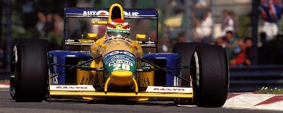

Desiludido com as duas temporadas frustantes na Lotus, no início do mês de setembro, Piquet assinou contrato com a equipe Benetton para a temporada de 1990; no final do mês, na semana do GP da Espanha, a escuderia anglo-italiana contrata o projetista inglês John Barnard. Ele se junta ao piloto brasileiro num projeto ambicioso: disputar de fato o título mundial.
Cumprindo as últimas três provas pela escuderia britânica, o melhor que ele consegue foi o 4º lugar no Japão; na última prova, o GP da Austrália, com chuva, na reta Brabham, Piquet acerta a traseira do Osella do italiano Piercarlo Ghinzani (última corrida na carreira). Numa despedida sem grandes resultados e tendo que disputar posições com o pelotão intermediário, Piquet terminou em 8º lugar no campeonato com 12 pontos.
A falta de potência do motor Cosworth V8 era compensada pelo notável equilíbrio do chassi do carro, e, após algumas boas corridas, Piquet vence o polêmico GP do Japão, (aquela prova, segundos depois da largada que Senna enfia o seu carro na traseira da Ferrari de Prost ao tentar fazer a primeira curva da pista e com os dois fora da pista, acabou decidindo o campeonato a favor do brasileiro da McLaren). A vitória teve sabor mais especial ainda para Piquet porque o segundo colocado foi o seu amigo de adolescência Roberto Moreno, também pela Benetton, estreando como substituto de Alessandro Nannini, que havia sofrido um gravíssimo acidente de helicóptero que lhe afastou em definitivo da F-1.
Piquet também venceu a corrida seguinte, o Grande Prêmio da Austrália, após uma manobra arriscada na última volta – Nigel Mansell, que ao volante da Ferrari tentava ultrapassar o brasileiro, foi obrigado a frear fortemente e sair da pista na curva mais fechada do circuito, quando o brasileiro, simples e propositalmente, ignorou sua tentativa e seguiu o traçado normal. Um lance sarcástico típico de Piquet no GP de número 500 da história da categoria. Com o magnífico lance, Piquet terminou em 3º com 43 pontos, e se classificou à frente de um piloto da McLaren e da Ferrari.

Em 1991, ainda na Benetton, Nelson obteve sua última vitória na F-1 no Grande Prêmio do Canadá, e também em cima de Mansell – a quem Piquet se referia ironicamente como o idiota veloz
. O inglês liderava com mais de 50 segundos, e na última volta desacelerou para acenar para os torcedores. Por causa disso, o alternador não gerou energia suficiente para abastecer toda a eletrônica embarcada do Williams e o carro simplesmente morreu
. Após a vitória, Piquet passou pelo carro parado de Mansell acenando para o rival. Depois declarou que quando viu o carro do piloto inglês parado naquele momento quase teve um .
orgasmo
Eu estava começando na F-1, ou ao menos não tinha a experiência de Nelson, já três vezes campeão do mundo. Aprendi muito com ele. Nos meus 27 anos de automobilismo nunca convivi com alguém da sua capacidade técnica, inteligência. Dizíamos dele hard worker, hard player. Nelson trabalhava duro e ao mesmo tempo era possível se divertir muito. Não tinha papas na língua.
Giorgio Ascanelli, sobre Nelson Piquet.
Neste mesmo ano, a Benetton substituiu Roberto Moreno pelo jovem talento Michael Schumacher, patrocinado pela Mercedes-Benz, que até então havia disputado apenas sua corrida de estreia na F-1. Insatisfeito com as perspectivas da sua equipe para a temporada de 1992, já que o novo motor Ford Cosworth não era suficientemente potente para deixá-lo em condições de voltar a brigar por títulos, Piquet, já com 39 anos de idade e 204 GPs no currículo, decidiu abandonar a categoria máxima do automobilismo após chegar em 4º lugar (1,5 ponto) no chuvoso Grande Prêmio da Austrália. Encerrou sua carreira na principal categoria em 6º lugar com 26.5 pontos.
{kind=link}
{kind=link}
{kind=link}